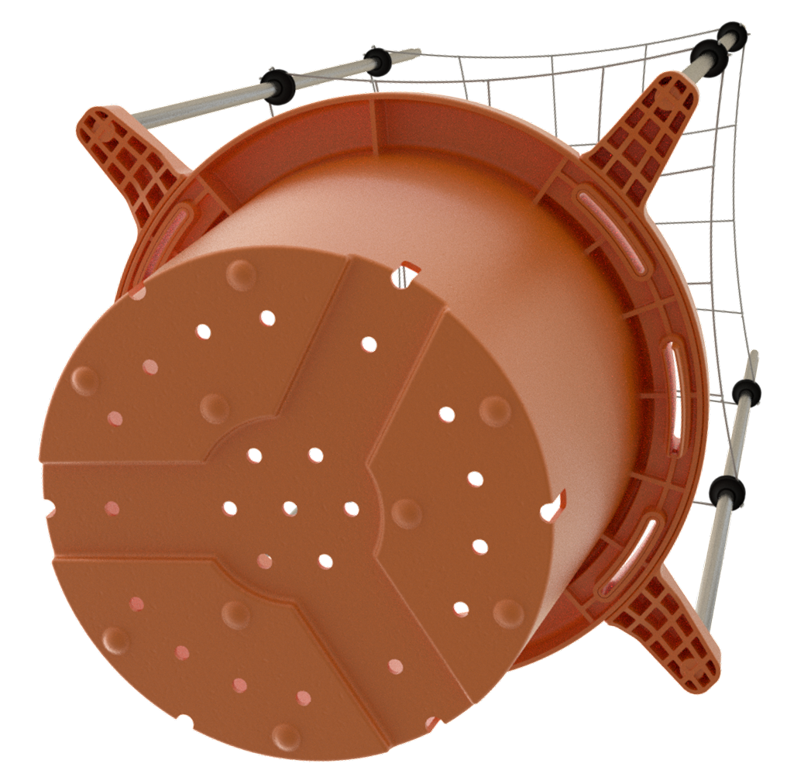
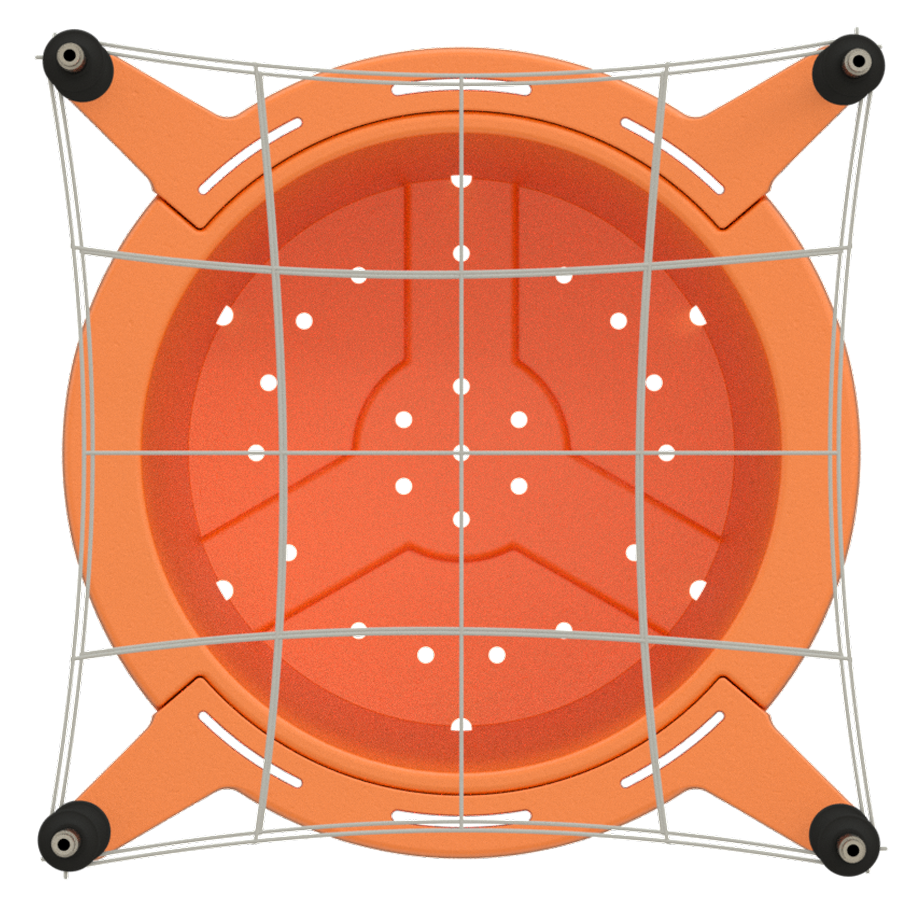

The Plant Forge allows gardeners to do more with less. Reduce labor, grow more productive plants, and increase your garden's overall efficiency!
By having each individual plant to have an individual trellis attached to each pot, you can combine the support found in traditional full-trellis applications with the ease of use, time savings, flexibility, and higher quality of plants grown in non-trellised rooms.
The Plant Forge was engineered with quality, efficiency and durability in mind. Its modular design allows for simple operation and maximized utility. This device can withstand the rigors of serious gardening in the long-term while simplifying daily garden tasks and increasing the productivity of each plant.
Increases Canopy-Coverage & Light Exposure
The Plant Forge enables fast, reliable and permanent plant training throughout each plant's life. The customizable and modular trellis design can fit any plant size or growth rate, allowing growers to maximize node-site exposure to light sources and create the most densely populated and efficient canopy spaces possible. These benefits increase overall product-quality and product-yields for each plant.
Improves Spatial Efficiency of Gardens
The Plant Forge was designed to be easily movable to maximize canopy and garden flexibility. As growers work through their canopy spaces defoliating, thinning, foliar spraying, performing plant inspections, or various disease/pest management applications, the added flexibility of a movable canopy space lets your garden be as efficient as it can possibly be - no matter the task. Each individual plant can be easily moved and rotated while securely supported by the Plant Forge.
Allows for Total-Plant Pest & Disease Prevention
The mobility of Plant Forge containers gives growers access to every part of every plant, as well as access to every cubic foot of their garden spaces.
Conventional trellis technique impedes access to plants that are in middle of trellised canopies. Interior plants locked in trellis groups can't be inspected or treated properly, making them much more prone to insect and disease outbreaks. These drawbacks are inherent to traditional trellising and make pest management programs far less effective, putting gardens at greater risk of serious outbreaks and product loss. Being able to treat every part of every plant maximizes the coverage and effectiveness of IPM applications and decreases the risk of catastrophic pest and disease outbreaks within indoor garden-spaces.
Phenotyping Made Easy!
The Plant Forge is the perfect solution for the unique difficulties of phenotyping. Versatile net sizes with customizable height and width can accommodate almost any strain/phenotype and provide growers with a high degree of flexibility when phenotyping or running multiple strains in one garden-space.
Another advantage of phenotyping with the Plant Forge is the ability to move plants and inspect each one carefully as it develops. Genetics from seed are often finicky and can cause greater issues for the garden at-large if they are not identified and culled quickly. The Plant Forge enables easy, careful inspection of plants to prevent any issues from developing.
These combined advantages of the Plant Forge containers reduce the challenges of hunting new genetics and selecting desirable phenotypes while also increasing overall product-quality and product yields.
Thinning & Defoliation - With Half The Labor

Thinning large groups of plants with multiple tops is a difficult and time consuming task. When large groups of plants have been weaved through multiple layers of a large, single trellis, the task gets substantially more difficult.
Plant Forge containers can easily be moved and rotated as gardeners thin and defoliate canopy spaces, allowing growers to sit in one place and comfortably work on each plant individually, saving growers time and discomfort - instead of growers being forced to contort their bodies around and through plants stuck in the center of a multi-layered trellis jungle. The ergonomic benefits of the Plant Forge system cuts labor time in half for thinning or defoliation, while making it much less physically difficult as well.
Maximize Overall Garden Efficiency
The Plant Forge is the most effective and customizable plant support system in existence. The customizable nets are faster than any alternative to set up, supports plants very reliably and easily accommodates any plant size/shape. The Plant Forge takes 25% of the time to get plants supported compared to stakes as a plant-support system, trains plants more effectively, and holds plant tops/branches in position more reliably than stakes.

Using stakes to support plants damages roots when stakes are driven into the soil. Utilizing the Plant Forge as a plant-support system avoids this problem entirely as the trellis-cage anchors to the container rim and has zero impact on the rhizosphere.
Plants that use stakes for support also end up with awkward canopy arrangements; branches and nodes that don't get light exposure and dead-space in the canopy. Staked plants are inefficient when grouped together, often leading to even more dead-space in canopies and requiring considerable tuning to get a fairly efficient arrangement.
With traditional trellis tech, plants become grouped together in canopy group, often leaving middle plants neglected, grown over, lacking optimal light and proper airflow. The Plant Forge fixes all of these issues by enabling growers to move plants easily and access those on the interior of canopy spaces for group rotations, workflows and plant care. This flexibility lets growers give optimal attention to every plant in the garden. It also goes a long way in maximizing the quality and yield output of every plant in a garden space. Maximizing efficiency of power use, nutrient expenses and labor output.
Fully Customizable & Made with Plant-Safe Materials
The Plant Forge system was designed to be as cost-effective and versatile as possible. All components are interchangeable and modular. This creates unique customizability and versatility to accommodate as many different environments, grow methods and cultivars as possible.
Quality construction from plant safe materials ensures product longevity for every Plant Forge container. These factors combined create consumer value and a lasting solution to many of the common garden difficulties faced by cultivators worldwide.